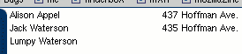

XUL Template Primer - Bindings
Contents
OverviewExample
The <bindings> element
The <binding> element
Related Documents
Notes
Overview
This document expands on the
XUL Template Primer
by introducing the <bindings> element in the
extended XUL template syntax.
The <bindings> element is used to create
additional, optional variable bindings, in addition to
those that are specified in a
rule's <conditions>. This is different from the
variables specified in the rule's conditions, where a
value must be found for each variable for the rule to
match. If a <binding> can't be matched, the
rule will still fire.
Example
To illustrate how <bindings> work, we'll
examine this
XUL document,
which builds a simple content model an RDF/XML file.
The XUL Template Primer covers the <conditions> and
<action> elements, so we won't discuss those
here.
We'll use a the following data model to illustrate how bindings
work. See the RDF/XML file
friends.rdf,
below, a simple database with name and address information for some of
my good friends.
The RDF model that this file creates can be represented with the following graph.

When displayed in Mozilla, something like this appears:

Note that even though poor Lumpy has
no nc:address property, he still appears in
the content model! Unlike the
<conditions>, bindings do not affect whether or
not a rule matches: they just "pull through" additional
information if it is available.
The <bindings> element
The <bindings> element is optional in a XUL
template, but if present, must appear as a sibling of the
<conditions> and <action>
elements in a rule.
The <binding> element
The <bindings> element (plural) may contain any
number of <binding> (singular) elements.
The <binding> element is very much like the
<triple>
condition:
it must have a subject, predicate, and
object attribute. These refer to the subject,
predicate, and object of a statement in the RDF model.
At least one of the <binding> elements must have a
subject variable that appears in the
<conditions>: this variable is the "hook" that is
used to bootstrap the binding. In our example, the
?friend variable serves this purpose in the first
<binding> element.
The subject may refer to any variable that has been computed in the
<conditions>, or it may refer to another
<binding>'s object variable.
1
In our example, the second <binding>'s
subject does this: the value for
the ?addr variable is computed by the
first <binding>
The predicate must name the URI of an RDF property, in
this case, nc:address.
The object must name a variable. The value of the
object's variable will be computed by invoking the
GetTarget() method using the object's
value as the aSource argument, and
the predicate's resource as
the aProperty argument. (See the
nsIRDFDataSource
interface for more details.)
In our example, the <rule> will be instantiated
three times: once each for Alison, Jack, and
Lumpy. However, in Lumpy's case, we won't be able to bind
the ?addr variable because Lumpy has no home! (Well,
there are no statements with Lumpy as the subject and
a nc:address as the predicate, anyway.)
Nevertheless, the rule still matches.
In the content that's built for Lumpy's <hbox>,
the second <label>'s value
attribute (which should contain the value of ?street)
is just left blank.
Related Documents
- XUL Template Primer
- XUL template basics.
- XUL Template Primer - Multiple Rules
-
Illustrates how to write templates with multiple
<rule>elements. - XUL Template Primer - Nested Content
- Illustrates how a template can be used recursively to build nested content.
- XUL Template Primer - Outliner
- Illustrates how a template can be used as a view for a XUL outliner.
- XUL Template Reference
- Describes the simple XUL template syntax in detail.
Notes
1As of this writing, it is necessary to
order <binding> elements carefully.
Specifically, if a binding depends on a variable in another
binding, it must appear
after the binding it depends on. For example, the sample
in this document wouldn't work if the
two <binding> elements were reversed, because
of the dependency on the
?addr variable. Fortunately, this is the natural way
one would write bindings, so in practice this should not be a
burden.